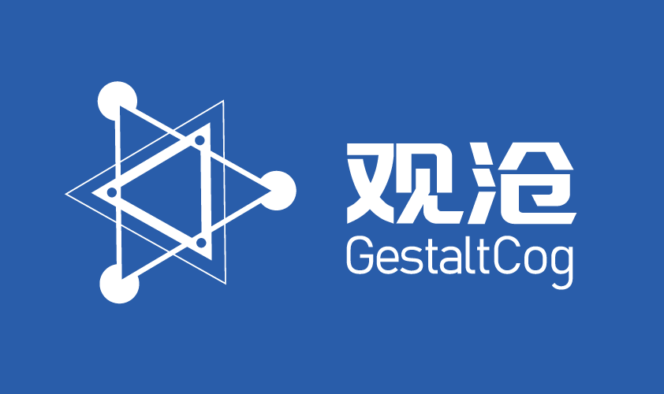
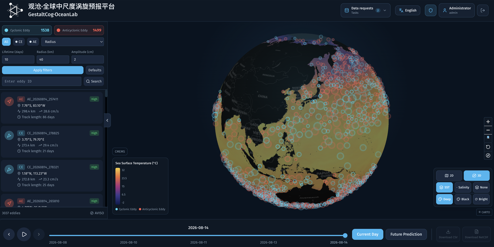
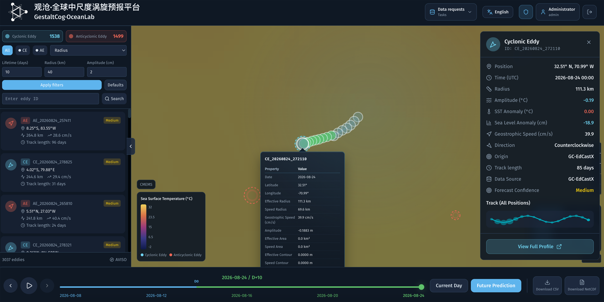
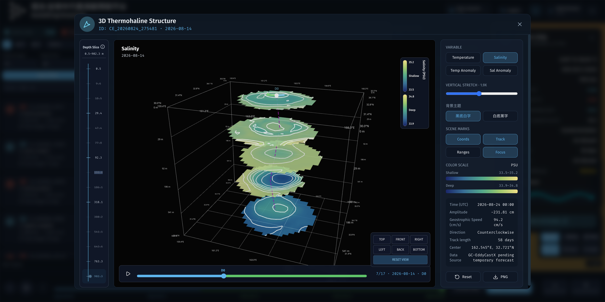

GC-EdCastX 涡旋预报
时空物理知识嵌入的涡旋预测方法，关联相邻时刻的涡旋演变，勾勒未来十天涡旋的位置、半径、振幅与中心高度等逐日演变。

中尺度涡旋宛如海面之下的风暴，携带热量、盐分与碳在全球输送。然而，传统涡旋研究困于离线模式：数据自行下载，脚本各自维护，结构难以透视，预报无处验证。
观沧将这一切搬到线上：每个涡旋的完整轨迹、逐日参数与次表层三维温盐结构随选随览，无需下载与搭建环境；面向未来，预报模型给出未来十天的位置与参数演变。



全球涡旋在线追踪，历史轨迹逐日回放。
未来十天轨迹预测与三维重建一体化，次表层结构同步呈现。
预测与重建精度全面领先，优于现有全球海洋预报 AI 系统。
涡旋参数、1/12° 三维结构与高清快照一键下载，成果即取即用。
为涡旋动力机制、水团输运研究提供即开即用的在线分析工具，让灵感不必等待数据。
从轨迹追踪到三维结构的全流程可视化，涡旋垂向结构一览无余。
涡旋位置与演化预报，为渔场研判与航线规划抢占先机。
交互式可视化让中尺度涡旋现象触手可及，服务海洋学教学与科普。